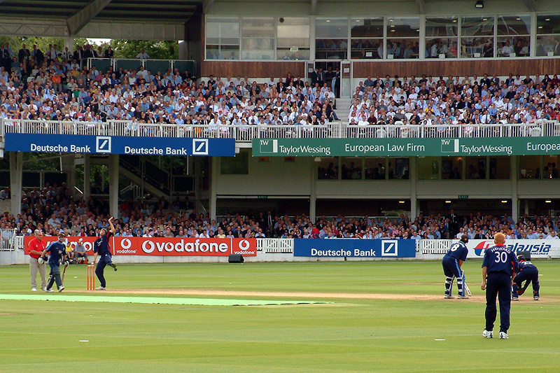
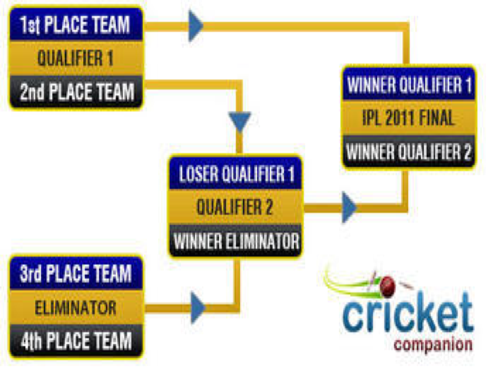

Ashish Jain


The raw data has been downloaded from Cricsheet website. The processed data is downloaded from Kaggle.
matches <- read.csv("data/matches.csv", stringsAsFactors = FALSE)
glimpse(matches)## Observations: 577
## Variables: 18
## $ id <int> 1, 2, 3, 4, 5, 6, 7, 8, 9, 10, 11, 12, 13, 14,...
## $ season <int> 2008, 2008, 2008, 2008, 2008, 2008, 2008, 2008...
## $ city <chr> "Bangalore", "Chandigarh", "Delhi", "Mumbai", ...
## $ date <chr> "2008-04-18", "2008-04-19", "2008-04-19", "200...
## $ team1 <chr> "Kolkata Knight Riders", "Chennai Super Kings"...
## $ team2 <chr> "Royal Challengers Bangalore", "Kings XI Punja...
## $ toss_winner <chr> "Royal Challengers Bangalore", "Chennai Super ...
## $ toss_decision <chr> "field", "bat", "bat", "bat", "bat", "bat", "b...
## $ result <chr> "normal", "normal", "normal", "normal", "norma...
## $ dl_applied <int> 0, 0, 0, 0, 0, 0, 0, 0, 0, 0, 0, 0, 0, 0, 0, 0...
## $ winner <chr> "Kolkata Knight Riders", "Chennai Super Kings"...
## $ win_by_runs <int> 140, 33, 0, 0, 0, 0, 0, 6, 0, 66, 0, 0, 0, 0, ...
## $ win_by_wickets <int> 0, 0, 9, 5, 5, 6, 9, 0, 3, 0, 7, 9, 10, 4, 0, ...
## $ player_of_match <chr> "BB McCullum", "MEK Hussey", "MF Maharoof", "M...
## $ venue <chr> "M Chinnaswamy Stadium", "Punjab Cricket Assoc...
## $ umpire1 <chr> "Asad Rauf", "MR Benson", "Aleem Dar", "SJ Dav...
## $ umpire2 <chr> "RE Koertzen", "SL Shastri", "GA Pratapkumar",...
## $ umpire3 <lgl> NA, NA, NA, NA, NA, NA, NA, NA, NA, NA, NA, NA...ballbyball <- read.csv("data/deliveries1.csv", stringsAsFactors = FALSE)
glimpse(ballbyball)## Observations: 136,598
## Variables: 22
## $ match_id <int> 1, 1, 1, 1, 1, 1, 1, 1, 1, 1, 1, 1, 1, 1, 1, ...
## $ inning <int> 1, 1, 1, 1, 1, 1, 1, 1, 1, 1, 1, 1, 1, 1, 1, ...
## $ batting_team <chr> "Kolkata Knight Riders", "Kolkata Knight Ride...
## $ bowling_team <chr> "Royal Challengers Bangalore", "Royal Challen...
## $ over <int> 1, 1, 1, 1, 1, 1, 1, 2, 2, 2, 2, 2, 2, 3, 3, ...
## $ ball <int> 1, 2, 3, 4, 5, 6, 7, 1, 2, 3, 4, 5, 6, 1, 2, ...
## $ batsman <chr> "SC Ganguly", "BB McCullum", "BB McCullum", "...
## $ non_striker <chr> "BB McCullum", "SC Ganguly", "SC Ganguly", "S...
## $ bowler <chr> "P Kumar", "P Kumar", "P Kumar", "P Kumar", "...
## $ is_super_over <int> 0, 0, 0, 0, 0, 0, 0, 0, 0, 0, 0, 0, 0, 0, 0, ...
## $ wide_runs <int> 0, 0, 1, 0, 0, 0, 0, 0, 0, 0, 0, 0, 0, 0, 0, ...
## $ bye_runs <int> 0, 0, 0, 0, 0, 0, 0, 0, 0, 0, 0, 0, 0, 0, 0, ...
## $ legbye_runs <int> 1, 0, 0, 0, 0, 0, 1, 0, 0, 0, 0, 0, 0, 0, 0, ...
## $ noball_runs <int> 0, 0, 0, 0, 0, 0, 0, 0, 0, 0, 0, 0, 0, 0, 0, ...
## $ penalty_runs <int> 0, 0, 0, 0, 0, 0, 0, 0, 0, 0, 0, 0, 0, 0, 0, ...
## $ batsman_runs <int> 0, 0, 0, 0, 0, 0, 0, 0, 4, 4, 6, 4, 0, 0, 0, ...
## $ extra_runs <int> 1, 0, 1, 0, 0, 0, 1, 0, 0, 0, 0, 0, 0, 0, 0, ...
## $ total_runs <int> 1, 0, 1, 0, 0, 0, 1, 0, 4, 4, 6, 4, 0, 0, 0, ...
## $ player_dismissed <chr> "", "", "", "", "", "", "", "", "", "", "", "...
## $ dismissal_kind <chr> "", "", "", "", "", "", "", "", "", "", "", "...
## $ fielder <chr> "", "", "", "", "", "", "", "", "", "", "", "...
## $ Season <int> 2008, 2008, 2008, 2008, 2008, 2008, 2008, 200...library("ggmap")
library("rworldmap")
cities<-unlist(matches %>% distinct(city) %>% filter(city != ""))
location<-geocode(cities)
row.names(location)<-cities
location<-location[,2:3]
coord2loc <- function(points)
{
countriesSP <- getMap(resolution='low')
pointsSP = SpatialPoints(points, proj4string=CRS(proj4string(countriesSP)))
indices = over(pointsSP, countriesSP)
indices$ADMIN #returns country name
}
countries<-coord2loc(as.matrix(location))
location[,3]<-countries
location["Kochi",]$V3<-"India"
location[,"city"]<-row.names(location)
glimpse(location)## Observations: 30
## Variables: 4
## $ lon <dbl> 77.59456, 76.77942, 77.10249, 72.87766, 88.36390, 75.7872...
## $ lat <dbl> 12.971599, 30.733315, 28.704059, 19.075984, 22.572646, 26...
## $ V3 <fctr> India, India, India, India, India, India, India, India, ...
## $ city <chr> "Bangalore", "Chandigarh", "Delhi", "Mumbai", "Kolkata", ...dplyrtidyrshinyggmaprworldmapggplotplotlyggrepel